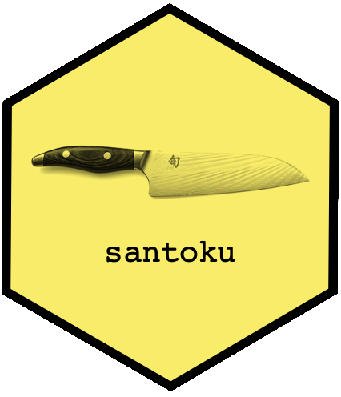
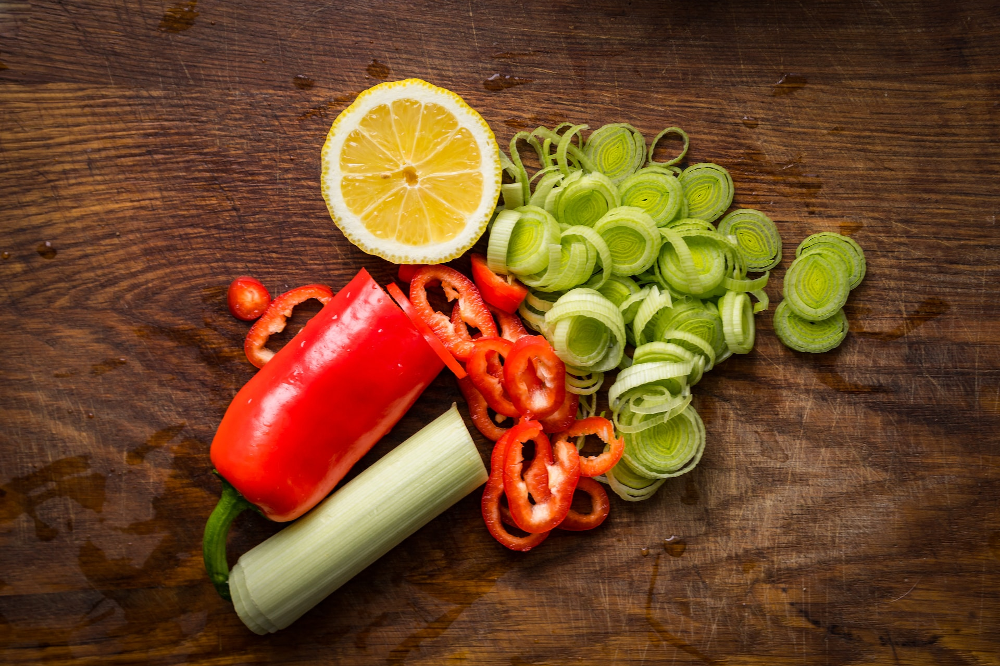
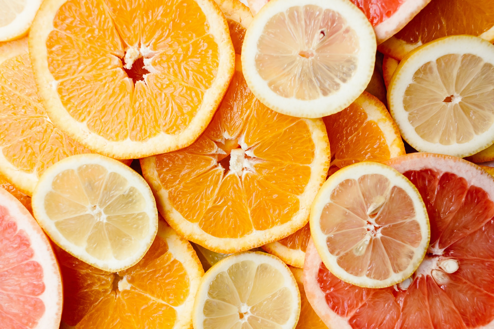

![]()
library(santoku)
library(tibble)Once upon a time in a blog that has vanished into the mists of the internet past, I used to have a habit of writing short posts talking about R packages I liked. The idea behind that habit was to spend a bit of time diving a little deeper into tool than I otherwise might have done. The intent wasn’t to write tutorials or anything quite that ambitious, it was simply to spend a bit of time with the package and commit my thoughts about it to paper, metaphorically speaking. It was quite a lot of fun.
Today I find myself having a few hours of free time on my hands, and thought I might revive the habit. I’ll pick one R package, play with it for a bit, and then write about it for no reason except for the joy I get in doing so.
With that in mind today’s post is about the santoku package authored by David Hugh-Jones. Why santoku,1 I hear you ask? Honestly, no particular reason except that I like it. That, and the fact that it has a cool hex sticker:

What problem does santoku solve?
In my academic days as a computational social scientist, I’d very often find myself needing to bin continuous data into discrete (and usually ordered) categories. It was one of those little data wrangling tasks that popped up a lot. When working with survey data, for instance, I might need to take raw test scores on some psychometric scale and carve them up into easily interpreted groups. The original data would be quantitative in nature but the raw numbers often didn’t mean much: it was often convenient to bin the respondents into “high”, “medium”, and “low” scores on… whatever it was about. Sometimes I’d have external guidance on what constitutes “high” and what constitutes “low”. For example, clinical measurement tools generally have some rough guidelines about what scores on a questionnaire roughly match up to “mild depression” versus “severe depression”. But sometimes there would be no external guidelines to rely on so I’d just have to make choices based on the data themselves.
Making these choices in real world data analysis can sometimes be fraught, particularly when someone later wants to use those categories as input to some subsequent analysis.2 Because it’s a decision that needs to be made with care, you really do want to have versatile tools that make the process painless and even – dare I say it – fun.
So, how do you do this in R? The way I have traditionally done this is to use the cut() function. For example, if I wanted to take some numbers that vary from 1 to 100 and bin them into intervals of size 25, I would do this:
tibble(
value = runif(10, min = 1, max = 100),
group = cut(value, breaks = c(0, 25, 50, 75, 100))
)# A tibble: 10 × 2
value group
<dbl> <fct>
1 27.3 (25,50]
2 37.8 (25,50]
3 57.7 (50,75]
4 90.9 (75,100]
5 21.0 (0,25]
6 89.9 (75,100]
7 94.5 (75,100]
8 66.4 (50,75]
9 63.3 (50,75]
10 7.12 (0,25] There’s nothing wrong with this workflow at all. The cut() function does the job it was designed for, and a little bit of extra work allows me to assign labels:
tibble(
value = runif(10, min = 1, max = 100),
group = cut(
value,
breaks = c(0, 25, 50, 75, 100),
labels = c("grp 1", "grp 2", "grp 3", "grp 4")
)
)# A tibble: 10 × 2
value group
<dbl> <fct>
1 21.4 grp 1
2 18.5 grp 1
3 69.0 grp 3
4 39.0 grp 2
5 77.2 grp 4
6 50.3 grp 3
7 72.0 grp 3
8 99.2 grp 4
9 38.6 grp 2
10 78.0 grp 4I could extend this workflow and use the quantile() function to carve the data set up into two groups of roughly equal size:
tibble(
value = runif(10, min = 1, max = 100),
group = cut(
value,
breaks = quantile(value, c(0, .5, 1))
))# A tibble: 10 × 2
value group
<dbl> <fct>
1 93.5 (36.8,93.5]
2 22.0 (2.33,36.8]
3 65.5 (36.8,93.5]
4 13.4 (2.33,36.8]
5 27.5 (2.33,36.8]
6 39.2 (36.8,93.5]
7 2.33 <NA>
8 38.9 (36.8,93.5]
9 87.1 (36.8,93.5]
10 34.7 (2.33,36.8]Okay that doesn’t quite work, because the smallest value in the data doesn’t get included: the zeroth quantile of the empirical data is always equal to the smallest value in the data, and by default the intervals constructed by cut() are left-open, right-closed. Fortunately, the cut() function has an include.lowest argument that I can use to fix this:
tibble(
value = runif(10, min = 1, max = 100),
group = cut(
value,
breaks = quantile(value, c(0, .5, 1)),
include.lowest = TRUE
))# A tibble: 10 × 2
value group
<dbl> <fct>
1 48.7 [11.7,55.1]
2 60.4 (55.1,82.9]
3 49.9 [11.7,55.1]
4 19.4 [11.7,55.1]
5 82.9 (55.1,82.9]
6 67.2 (55.1,82.9]
7 79.6 (55.1,82.9]
8 11.7 [11.7,55.1]
9 72.6 (55.1,82.9]
10 41.7 [11.7,55.1]The automated labels helpfully make clear that the lowest interval is closed on both sides. It isn’t always pretty, but it works.
Given that the base R tools work, it’s not obvious from afar why there would be any need or desire to have a specialised R package that provides a replacement for cut(). To that I would answer thusly: if discretising a continuous variable is something you do rarely, you probably don’t need a specialised package. The tools in base R are perfectly functional, and the “pain points” aren’t hard to work around: the include.lowest issue I mentioned above is a good example. On the other hand, if this is a data wrangling task you have to perform a lot – as I used to – these pain points start to become really annoying. Over and over I’d forget the workarounds, and I’d have to reinvent solutions and rewrite code that I’d written a dozen times before. When revisiting code that I’d written months before, I’d find myself wondering “why did I do it that way?” because I’d forgotten the specific edge case I was trying to work around.
Whenever you find yourself in that situation – where very small pain points in the standard tooling are adding up to a substantial annoyance because you happen to be one of those people who encounters them a lot – you might very well be in the market for a more specialised tool.
Enter, stage left, the santoku package…
Specialist chop functions
Let’s start with the basics. As you might hope, the santoku package provides a drop-in replacement for cut(), called chop(). If I re-run my first example using the chop() function, I’d hope to get the same results and indeed – random sampling notwithstanding – I more or less do…
tibble(
value = runif(10, min = 1, max = 100),
group = chop(value, breaks = c(0, 25, 50, 75, 100))
)# A tibble: 10 × 2
value group
<dbl> <fct>
1 82.3 [75, 100]
2 65.1 [50, 75)
3 78.5 [75, 100]
4 55.8 [50, 75)
5 53.4 [50, 75)
6 79.1 [75, 100]
7 3.31 [0, 25)
8 48.2 [25, 50)
9 73.5 [50, 75)
10 69.6 [50, 75) Looking carefully at the output we can see some minor differences: the default behavior of chop() is to create intervals that are left-closed and right-open, whereas cut() is left-open and right-closed. Both functions have arguments that allow you to switch between these two forms, and to my mind there’s not a strong argument to prefer one default over the other.3
However, let’s have a look at what happens when I try my second example with chop():
tibble(
value = runif(10, min = 1, max = 100),
group = chop(
value,
breaks = quantile(value, c(0, .5, 1))
))# A tibble: 10 × 2
value group
<dbl> <fct>
1 48.3 50%
2 86.3 50%
3 44.4 50%
4 25.2 0%
5 8.00 0%
6 10.8 0%
7 32.3 0%
8 52.3 50%
9 66.5 50%
10 41.3 0% Ooh. Something nice has happened. Notice that there are no NA values: chop() has a close_end argument that is analogous to the include.lowest argument to cut(), but it defaults to TRUE rather than FALSE. Though mathematically inelegant,4 the chop() default is nicely aligned with the needs of the analyst.
A second interesting thing to note is that if the user doesn’t explicitly specify labels, but the breaks argument is a named vector – like the ones produced by quantile() – the discretised variable will inherit those names. That’s usually a good thing, in my experience, though it’s a little clunky in this instance because the names produced by quantile() aren’t precisely the labels I’d like to have when chopping the data into two equally sized groups.
Actually… you know what? Chopping the data into \(n\) equally sized groups is something that happens so bloody often in practice that it deserves to have a specialist function. Rather than tediously passing \(n+1\) quantiles to the quantile() function and then passing the result to cut(), it would be nice to have a specialised function that handles this case. That’s the job of chop_equally():
tibble(
value = runif(10, min = 1, max = 100),
group = chop_equally(value, 2)
)# A tibble: 10 × 2
value group
<dbl> <fct>
1 91.4 [47.41, 91.37]
2 30.1 [9.34, 47.41)
3 46.4 [9.34, 47.41)
4 33.9 [9.34, 47.41)
5 65.4 [47.41, 91.37]
6 26.5 [9.34, 47.41)
7 48.4 [47.41, 91.37]
8 76.9 [47.41, 91.37]
9 9.34 [9.34, 47.41)
10 87.7 [47.41, 91.37]Lovely. I mean, compare the pair…
# base R
cut(
value,
breaks = quantile(value, c(0, .5, 1)),
include.lowest = TRUE
)
# santoku
chop_equally(value, groups = 2)If you have to do the task on a daily basis, you really want to use the second version. It’s easy to write, easy to read, and it “just works”. True, if you’re a package developer or an R user who doesn’t have to discretise continuous data regularly, it might not be worth the effort of learning santoku. But for everyday data wrangling? As someone who has5 to do this over and over again… yes please.
Fundamentally, this is the value of specialised tools. I honestly don’t think there’s anything wrong with the cut() function in base R. Most languages wouldn’t even supply something like cut() as part of the core language because most programmers don’t have a need for it, but R is not a typical language: it is a language for data analysts and it is designed to allow data analysts to – and I’m going to quote Hadley Wickham here – “get shit done”. The R core devs know that this matters in data analysis so there is a cut() function that sits at this sweet spot that is simple and convenient for a typical data analyst who has to very occasionally solve this problem. But if you’re doing it a lot… oh my the specialist functions provided by santoku really make a difference.

You had me at “hello” but…
At this point, I have to be honest. I liked santoku when I first looked at the defaults for chop(), and I was already in love when I saw chop_equally(). Anything else beyond those two functions is icing on the cake that I was already salivating over. As it happens, however, santoku goes quite a long way past these things. There are so many gorgeous details in how it works that you just know that the author has suffered some version of the same fucking pain I have suffered when trying to discretise a variable that is “technically” continuous but kinda isn’t really.
Want an example? Of course you do.
One of the many weird topics that I spent far too much of my former life working on is human probability judgments. Like, in some experiment, the researcher would present participants with some scenario or proposition, and then actual human beings would be asked to provide a numeric rating corresponding to the probability that the scenario will actually happen, or that the proposition is actually true.
When you think about this as a mathematical or inferential question, it’s well posed. “What is the probability of rain tomorrow?” is a perfectly sensible question and the set of admissable answers corresponds to the unit interval: 0 means impossible, 1 means definite, and every number in between is a quantified measure of uncertainty. Literally this is the sort of question that the discipline of meteorology exists to answer. Meteorologists, in fact, are shockingly good at answering these questions.
The rest of us, however, are not so good.
One of the nastiest features of probability judgment data arises because the natural language semantics of chance don’t map cleanly onto the mathematics of probability. In everyday usage, people often use “fifty-fifty” as a non-literal expression to that rougly means “I have no fucking idea what will happen”. So when somebody responds with “50%” to a probability question, the interpretation of that answer is ambiguous. Sometimes it means what it says it means: “the event is exactly as likely to happen as not happen”. But at other times it means: “fucked if I know”. Those aren’t equivalent statements, not by a long shot. And what happens in practice when you analyse data from those kinds of studies is that your notionally-continuous variable has a massive spike at 0.5, because people are doing something with the question that isn’t quite in alignment with the formal logic of uncertainty. That is to say, there is a qualitative difference between 49% and 50%. “50%” is a special category.
Okay, so let’s create a silly vector that captures this intuition.
sigh <- c(.1234, .45634, .5, .5, .5, .5842, .95234)In real life, human participants don’t give responses to several decimal places, but you get the idea. There are three people who have responded with .5 because that’s a special value, and there are four people who have given other answers.
How would I carve this into three categories using cut()? It’s clunky but doable. You create intervals that are a tiny bit above and a tiny bit below the special value:
tibble(
value = sigh,
group = cut(value, breaks = c(0, .49999, .50001, 1))
)# A tibble: 7 × 2
value group
<dbl> <fct>
1 0.123 (0,0.49999]
2 0.456 (0,0.49999]
3 0.5 (0.49999,0.50001]
4 0.5 (0.49999,0.50001]
5 0.5 (0.49999,0.50001]
6 0.584 (0.50001,1]
7 0.952 (0.50001,1] It works, but it’s kind of weird. It feels like a workaround because it is: cut() doesn’t allow you to specify a specific value as a category:
tibble(
value = sigh,
group = cut(value, breaks = c(0, .5, .5, 1))
)Error in cut.default(value, breaks = c(0, 0.5, 0.5, 1)): 'breaks' are not uniqueAgain, this is behaviour that makes sense mathematically if you are dealing with strictly continuous data: a set that has measure zero in the domain will necessarily include zero observations when presented with a finite sample from a continuous distribution specified over that domain. But… real life is not like that. You absolutely can observe data from distributions that are best modelled as a mixture of discrete point masses blended with an underlying continuous distribution,6 and so you need data chopping tools that accommodate continuous ranges and discrete points at the same time.
Happily, chop() does precisely this:
tibble(
value = sigh,
group = chop(value, breaks = c(0, .5, .5, 1))
)# A tibble: 7 × 2
value group
<dbl> <fct>
1 0.123 [0, 0.5)
2 0.456 [0, 0.5)
3 0.5 {0.5}
4 0.5 {0.5}
5 0.5 {0.5}
6 0.584 (0.5, 1]
7 0.952 (0.5, 1]Notice how the labels for the intervals automatically adjust to accommodate this specification. The point mass interval in the middle is labelled in discrete set notation as {0.5}, and the continuous intervals that surround it are both open on that side, leading to [0, 0.5) as the label on the lower side and (0.5, 1] as the label on the upper side. It’s the exactly correct way to refer to these categories, and while cut() probably doesn’t need this level of nuance, it is deeply appreciated when you have to work with “fuck ugly”7 data that arise when you run a behavioural experiment with probability judgments as an outcome variable.
You love to see it, honestly.

Want more?
When I started writing this post earlier this morning I promised myself I wouldn’t turn it into a whole thing the way I usually do. This is not meant to be a comprehensive treatment or a deep dive or whatever. Today is a day off for me and I’m having fun playing with a thing that I enjoy. So I shall resist the temptation to dive too much deeper. Nevertheless, I’ll add a few other remarks that give a sense of why I love the santoku package. First, it has convenience functions that allow you to automatically tabulate. Let’s say I have a bunch of dull, normally distributed observations:
x <- rnorm(100)As described above, I can chop them into 5 equally sized groups like this:
chop_equally(x, groups = 3) [1] [-1.805, -0.3243) [-1.805, -0.3243) [-0.3243, 0.3842)
[4] [0.3842, 2.402] [0.3842, 2.402] [-0.3243, 0.3842)
[7] [-0.3243, 0.3842) [0.3842, 2.402] [0.3842, 2.402]
[10] [-1.805, -0.3243) [-1.805, -0.3243) [-0.3243, 0.3842)
[13] [0.3842, 2.402] [-0.3243, 0.3842) [0.3842, 2.402]
[16] [0.3842, 2.402] [-1.805, -0.3243) [-0.3243, 0.3842)
[19] [-1.805, -0.3243) [0.3842, 2.402] [0.3842, 2.402]
[22] [-1.805, -0.3243) [-1.805, -0.3243) [0.3842, 2.402]
[25] [-0.3243, 0.3842) [0.3842, 2.402] [-0.3243, 0.3842)
[28] [0.3842, 2.402] [-0.3243, 0.3842) [-1.805, -0.3243)
[31] [-0.3243, 0.3842) [-1.805, -0.3243) [0.3842, 2.402]
[34] [-0.3243, 0.3842) [0.3842, 2.402] [0.3842, 2.402]
[37] [-1.805, -0.3243) [0.3842, 2.402] [-1.805, -0.3243)
[40] [-1.805, -0.3243) [-0.3243, 0.3842) [-1.805, -0.3243)
[43] [-0.3243, 0.3842) [-0.3243, 0.3842) [-1.805, -0.3243)
[46] [-1.805, -0.3243) [-0.3243, 0.3842) [0.3842, 2.402]
[49] [-1.805, -0.3243) [0.3842, 2.402] [-0.3243, 0.3842)
[52] [0.3842, 2.402] [-0.3243, 0.3842) [-0.3243, 0.3842)
[55] [-0.3243, 0.3842) [-1.805, -0.3243) [0.3842, 2.402]
[58] [0.3842, 2.402] [0.3842, 2.402] [0.3842, 2.402]
[61] [0.3842, 2.402] [-1.805, -0.3243) [-1.805, -0.3243)
[64] [-1.805, -0.3243) [-1.805, -0.3243) [-1.805, -0.3243)
[67] [-0.3243, 0.3842) [-1.805, -0.3243) [-0.3243, 0.3842)
[70] [-1.805, -0.3243) [0.3842, 2.402] [0.3842, 2.402]
[73] [0.3842, 2.402] [0.3842, 2.402] [0.3842, 2.402]
[76] [-1.805, -0.3243) [-1.805, -0.3243) [0.3842, 2.402]
[79] [-1.805, -0.3243) [-0.3243, 0.3842) [-1.805, -0.3243)
[82] [-0.3243, 0.3842) [-0.3243, 0.3842) [0.3842, 2.402]
[85] [-0.3243, 0.3842) [-1.805, -0.3243) [0.3842, 2.402]
[88] [-0.3243, 0.3842) [-0.3243, 0.3842) [-0.3243, 0.3842)
[91] [0.3842, 2.402] [-0.3243, 0.3842) [-0.3243, 0.3842)
[94] [-1.805, -0.3243) [-0.3243, 0.3842) [-0.3243, 0.3842)
[97] [-1.805, -0.3243) [0.3842, 2.402] [-1.805, -0.3243)
[100] [-0.3243, 0.3842)
Levels: [-1.805, -0.3243) [-0.3243, 0.3842) [0.3842, 2.402]But what if I want to tabulate them? That’s a spectacularly common task for discretised data, and in base R I have the table() function for this purpose, so I could turn this into a pipeline and write my code like this if I wanted:
x |>
chop_equally(groups = 3) |>
table()
[-1.805, -0.3243) [-0.3243, 0.3842) [0.3842, 2.402]
33 33 34 Except, because santoku has anticipated this as a need and provided me with a tab_equally() function that tabulates the data but otherwise mirrors chop_equally(), I don’t have to:
tab_equally(x, groups = 3)[-1.805, -0.3243) [-0.3243, 0.3842) [0.3842, 2.402]
33 33 34 Ah, lovely.
Better yet, there are quite a lot of specialised chop_*() functions that have corresponding tab_*() functions.
chop_equally()splits the data into equally frequent groupschop_evenly()splits the data into groups of equal widthchop_mean_sd()splits the data into groups of equal numbers of standard deviations around the mean- … and so on.
There’s several of these and they all have handy tab_*() analogs. So, on the off chance I’ve forgotten the horrible lessons drummed into me from first year stats, let’s have a look at what I can expect from 100K normally distributed observations…
tab_mean_sd(rnorm(100000), sds = 1:3)[-Inf sd, -3 sd) [-3 sd, -2 sd) [-2 sd, -1 sd) [-1 sd, 0 sd)
134 2161 13666 33934
[0 sd, 1 sd) [1 sd, 2 sd) [2 sd, 3 sd) [3 sd, Inf sd]
34292 13487 2196 130 Suffice it to say, if you’ve ever been forced to memorise the “X% of data falls within Y standard deviations of the mean” dogma that surrounds the tyranny of the normal,8 these numbers will be painfully unsurprising.
More generally though, it can be super helpful when doing exploratory data analysis to rely on these tab_*() functions. For example, the basic chop() function has a tab() analog, and if I return to my annoying sigh vector, I can use tab() to quickly check if there was actually a good reason for me to treat 50% as a “special” value:
tab(sigh, breaks = c(0, .5, .5, 1))[0, 0.5) {0.5} (0.5, 1]
2 3 2 Yeah, there really was.
But wait! There’s more!9 The santoku package also comes with some handy labeller functions that make it easy to construct sensible labels for your categories. For instance, lbl_glue():
tab(sigh, breaks = c(0, .5, .5, 1), labels = lbl_glue("from {l} to {r}")) from 0 to 0.5 from 0.5 to 0.5 from 0.5 to 1
2 3 2 Ooh pretty.
Summary
Aaaanyway, I promised myself I wasn’t going to go overboard in this post. I was going to throw it together quickly and then shove it out even if it wasn’t perfect. Life is like that. Really the take home message in all this is that santoku is a really nice, specialised package. You don’t need it until you need it, but when you do… you know.
I’ll leave you to explore the whole thing should you feel the need. The point here is really that the santoku package really does capture all the little bits and pieces that you might need when addressing the “discretising a continuous variable” problem. In any specific data pipeline you probably wouldn’t expect to call it more than once or twice in the final version, but it’s extremely helpful in getting you to that final version, and you might find you end up using it a lot when the same damn problems show up over and over.
Footnotes
The package takes its name from the santoku bōchō, a Japanese kitchen knife. The name, I’m told, translates to “three virtues”, indicating that the knife is used for cutting, slicing, and chopping.↩︎
Indeed there is a whole mini-literature about if and when it is safe to discretise a continuous variable in the context of statistical inference. I’m not going to talk about it in this post, but suffice it to say that if you’re a psychologist thinking of forwarding me “that paper” by Kris Preacher and others, trust me I’m fully aware of it. Kris and I go way back.↩︎
I have a mild personal preference for the
chop()default, because I tend to think that break points specify lower bounds rather than upper bounds, but that’s probably a me thing.↩︎The
cut()default is to always use half-closed intervals, which makes sense as a mathematical operation, but it’s irritating from a practical data analysis perspective because we almost never want to exclude one extremum of the data solely because the technical definition of an empirical quantile leads to the exclusion of one end point.↩︎Okay I should probably use past tense here: I don’t have this problem so much these days, being unemployed and all.↩︎
Statistics has had formal tools for dealing with this for a long time. I imagine it existed earlier, but for me at least the oldest tool I’ve used comes from Ferguson 1973 paper introducing the Dirichlet process. If your observations are sampled from a DP with an absolutely continuous base distribution, the posterior will be a DP whose base distribution is mixture of the continuous base distribution and the discrete base distribution. Life has continuous and discrete parts, so of course we see this in our data.↩︎
That’s a technical term.↩︎
I’m so annoyed that there isn’t an obvious wikipedia page I can link to here. The central limit theorem is lovely, honest. I fucking love it. But, alas, not all measurable things in this world are U-statistics, and sometimes you can’t fucking rely on the CLT as a justification for your laziness. Extreme value distributions and other more fucked-up things have an obnoxious tendency to appear in the wild and you bloody well have to deal with it.↩︎
Okay, I’m sort of assuming that you know the old trope of late night hour-long paid advertisement tv shows that would inevitably end with the announcer saying “but wait there’s more” and throwing in a set of steak knives for free, which I totally want when I’m buying a vacuum cleaner. It occurs to me that my children have literally never seen one of these obnoxious things, and would have no idea what I’m alluding to in this, a post about chopping things with santoku.↩︎
Reuse
Citation
BibTeX citation:
@online{navarro2023,
author = {Navarro, Danielle},
title = {Santoku},
date = {2023-05-22},
url = {https://blog.djnavarro.net/posts/2023-05-22_santoku},
langid = {en}
}
For attribution, please cite this work as: